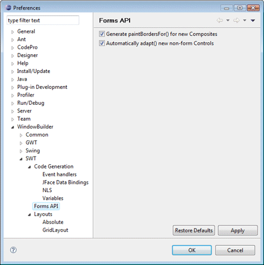

|
 This page is used to control various SWT > Forms API options. Generate paintBordersFor() for new CompositesThis preference controls whether a call to paintBordersFor() method is generated for each added composite. When borders are turned on for a composite, various widgets are automatically drawn with a flat border. When borders are turned off, widgets are drawn without borders. Automatically adapt() new non-form ControlsThis preference controls whether new non-form controls are automatically adapted using the form toolkit |